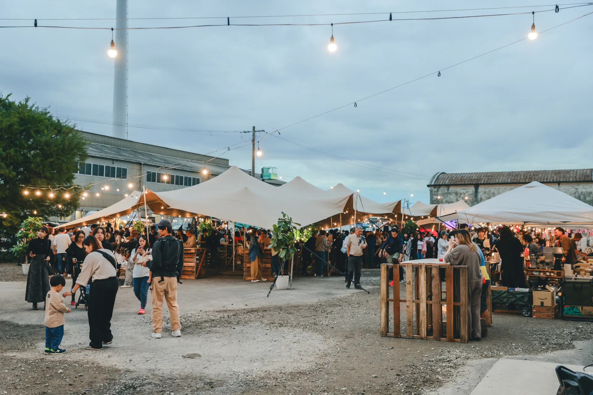

L
10m × 20m
大型フェス、企業イベント、メイン会場に。

STRETCH TENT RENTAL
L・M・Sの3サイズを、イベントの規模と会場条件に合わせてご提案。運搬・設営・撤去まで全国対応します。
ABOUT
伸縮性のある膜を複数のポールで支えるストレッチテントは、会場に合わせて形を変えられるのが特長です。フェス、マルシェ、企業イベント、地域催事まで、雨や日差しを避ける設備としてだけでなく、来場者の記憶に残る会場演出として活用できます。
SIZE LINEUP
10m × 20m
大型フェス、企業イベント、メイン会場に。
10m × 8m
マルシェ、飲食スペース、中規模イベントに。
8m × 6m
小規模イベント、受付、ラウンジ空間に。
布の形・高さ・ポール位置はイメージです。会場条件により変わります。
WORKS

三重県四日市市・大型イベント

熊本県・芝生会場